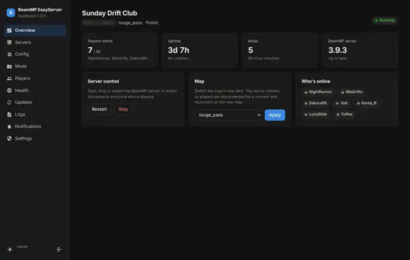
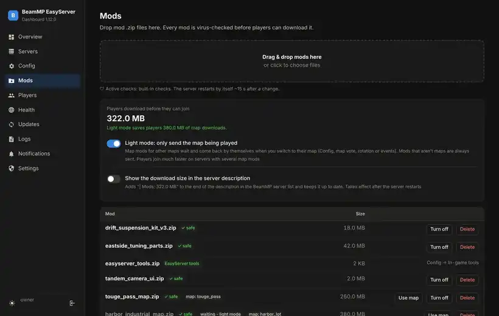
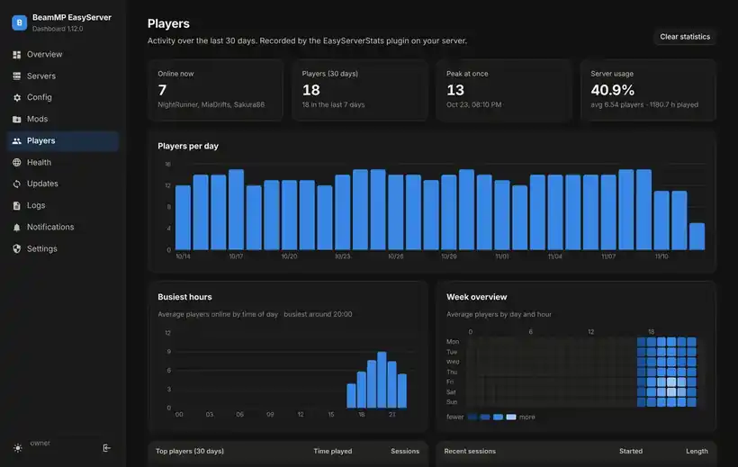
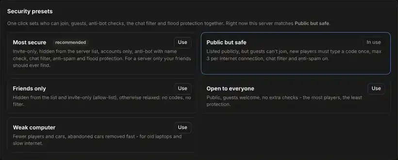
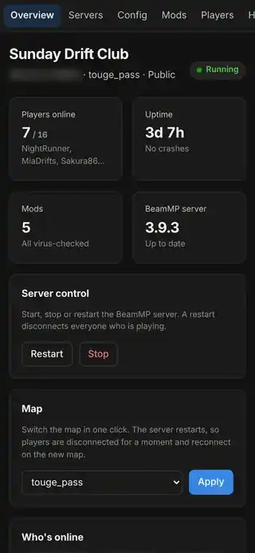
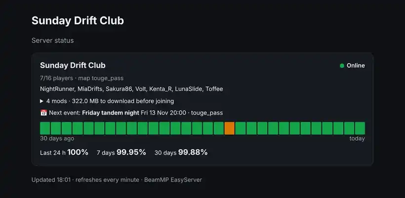

EasyServer installs the official BeamMP server for you and gives you a dashboard on your PC or phone: mods with a virus check, player stats, moderation, Discord and more. No config files, no command line.

About ten minutes, most of it waiting for downloads.
Log in at keymaster.beammp.com with Discord, click Keys → + and copy the key. It puts your server in the public BeamMP list.
Download BeamMP-EasyServer-Windows.zip from the latest release, extract it and double-click Install-BeamMP-Server.bat.
Paste this into a terminal:
curl -fsSL https://raw.githubusercontent.com/Csabika-dev/beammp-easyserver/main/linux/install.sh | sudo bash
Go to http://localhost:30815 on the server computer, choose a password, and you're live. From your phone or other PCs at home: http://<server-ip>:30815.
For friends outside your home, forward port 30814 (TCP + UDP) on your router. The dashboard's Health page tells you whether it worked. Step-by-step guides →
Built for people who want to play with friends, not learn server administration.
Drag mod .zip files onto the page. Every mod is checked for hidden programs, disguised files and zip bombs before players can download it, with Microsoft Defender or ClamAV and optionally VirusTotal.

Players per day, the busiest hours, a week heatmap, top players, server records and which maps people actually enjoy.

Pick how open your server is with one click, from Most secure (invite-only, anti-bot, flood protection) to Open to everyone. Every config change is saved, so you can see what changed and undo it.

The dashboard works on any phone. There's an Android app, and on iPhone you can add it to the home screen. Get notified about crashes, joins and updates on your phone, in Discord, Telegram, Slack or by email.

Share one link that shows whether the server is up, who's online, the mods to download and the next event. No login, no addresses or settings exposed.

All optional. Turn on what you need.
Players type /vote, or the map changes on a schedule.
"Friday drift night" switches map and mods, and is announced in Discord.
Teleport to friends (they accept first), and realism or hardcore repair rules.
Abandoned cars removed, nightly cleanup with a countdown.
Welcome message, timed announcements, chat filter, anti-spam, /countdown.
Run several servers on one PC with CPU, RAM and download limits.
Restore or move to a new computer with one file.
Optional relay and flood protection against DDoS.
Server errors in plain English, with what to do.
Your server is a computer on your home network, so EasyServer treats safety as a feature.
Your AuthKey, tokens and passwords are encrypted, never stored in plain text.
On Linux the game server and the dashboard run as separate, limited users.
Required before the dashboard can be reached from the internet.
Automated tests attack every dashboard page and the game plugin on each update.
Yes, free and open source (MIT license). BeamMP and its server are also free. You need your own copy of BeamNG.drive to play.
EasyServer installs the official BeamMP server and keeps it updated. EasyServer itself is a community project, not made or endorsed by the BeamMP team.
Any 64-bit Windows 10/11 PC, or Linux (Ubuntu, Linux Mint, Debian and others, also Raspberry Pi 4/5 with a 64-bit OS). An old laptop is enough for a group of friends. Upload speed matters more than the processor.
No. It only opens the port in the computer's own firewall, and always asks first. For friends outside your home you forward the port yourself; the guides show how for common routers.
Yes. The dashboard works in any phone browser, there's an Android app, and you can add it to the iPhone home screen. Managing it from outside your home is possible with HTTPS and two-step login turned on.
Open an issue on GitHub. For security problems please use private reporting instead.